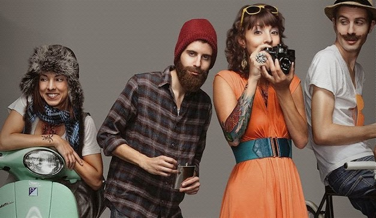

¿Que es hipster? 
Los hipsters son una nueva subcultura que busca alejarse de las corrientes predominantes y opta por estilos de vida alternativos. Además de otros factores que los identifican, como la música indie, los hipster tienen una vestimenta particular, con prendas vintage y looks retro.
Caracteristicas de un hispter
La cultura bautizada como “hipster” es una de las movidas pop más culturales más en boga en los últimos años, están relacionados con la música, la ropa y la actitud. Es por eso que hemos realizado un listado con las características más resaltantes de los hipsters.
1 Las gafas Uno de los accesorios más representativos de un hipster, son las gafas o lentes. Estos son grandes y de marco grueso, inclusive a veces ni siquiera tienen medida.
2 El cabello y la barba En el caso de las mujeres, “las hipster” llevan el cabello largo; en el caso de los hombres la barba es el look que es más popular entre “los hipster”.
3 Ropa vintage Los hipster se han encargado de traer de vuelta modas antiguas, de los 60, 70 y 80. Quizás no todo el atuendo completo, pero si alguna “prenda vintage”.
4 Bebidas artesanales Otra de las “ondas” hipster es el gusto por temas “artesanales” a la hora de beber, como por ejemplo las cervezas artesanales.
6 Bares bohemios Todo hipster que se respeta asiste a bares bohemio, no a los a que están de moda. Aquellos bares históricos son el lugar favorito de los hipsters.
7 Bicicleta Para los hipster la bicicleta es su principal (y a veces único) vehículo de transporte. Van con ella a todas partes.
8 Amantes de Apple iPhone, iPad o Macbook son los dispositivos móviles favoritos de los hipsters, tos de Apple.
9 Sushi Una de los platillos favoritos es el sushi, además de todos los platillos exóticos y de nombres impronunciables. La idea es que comen cosas distintas así no les gusten